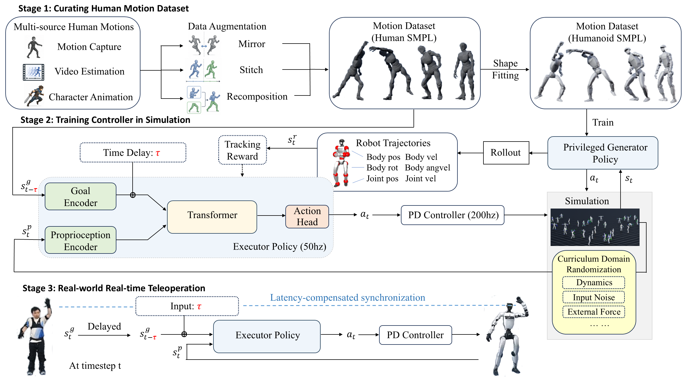
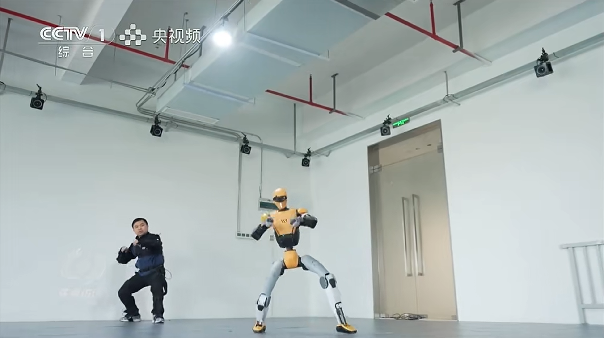
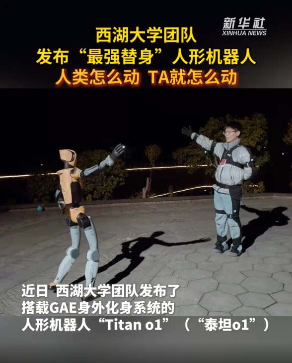
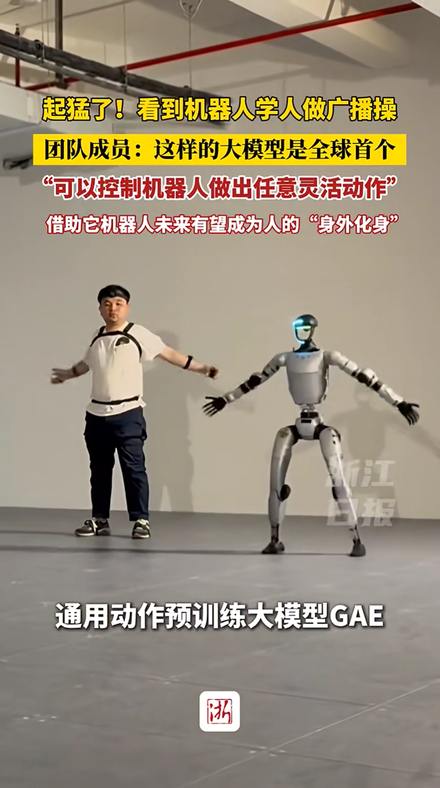

Abstract
Humanoid avatars extend human physical presence beyond the body, enabling people to participate in social, service, and labor activities through remotely operated robots. This requires teleoperation systems capable of realizing diverse and dynamic whole-body behaviors while maintaining responsive human-robot synchronization. We present \textbf{General Action Expert (GAE)}, a unified learning framework for general-purpose, low-latency humanoid whole-body teleoperation. To cover diverse human behaviors, GAE builds a large-scale human motion dataset from heterogeneous sources, including videos, animations, and motion capture, followed by standardization and augmentation. GAE then addresses the noise and embodiment mismatch in human motions with a two-stage training paradigm: a privileged generator policy first tracks human motion references in simulation and rolls out feasible humanoid trajectories; a deployable executor policy then learns to track these generated trajectories under curriculum domain randomization. For responsive human-robot synchronization, GAE introduces a latency-conditioned anticipation mechanism that adaptively compensates for end-to-end delay during real-time teleoperation. Simulation and real-world experiments on Unitree G1 and Westlake O1 robots demonstrate that GAE enables humanoids to smoothly mirror diverse, agile, and expressive human behaviors.

GAE consists of three stages. 1) curating a large-scale multi-source human motion dataset, 2) training the controller in simulation through a generator-executor paradigm, 3) teleoperating real-world humanoid robots with latency-conditioned synchronization.
Mimic diverse movements in real-time
Manipulation tasks
Open the fridge
Pick up the bottles
Pick up the handbag
Leg massage
Cross-platform deployment
GAE provides a transferable framework for adapting whole-body control to different humanoid platforms. Here, we demonstrate the performance of fine-tuned GAE model on the Westlake O1 robot.
Broke the door
Kick the ball
Compare with SONIC
Ablation experiment
GAE introduces a latency-conditioned anticipation mechanism to compensate for end-to-end delay during real-time teleoperation. Here, we let two robots to simultaneously track the same human motion: the left robot acts without anticipation, while the right robot uses anticipation. The anticipation mechanism visibly reduces response delay, enabling tighter synchronization between the human operator and the robot.
Media Report
We have been featured in several media outlets, highlighting our research and its impact.

CCTV Focus Report.

Xinhua News.

Zhejiang Daily News.
BibTeX
@article{YourPaperKey2024,
title={GAE: General Action Expert for Real-Time Humanoid Teleoperation},
author={First Author and Second Author and Third Author},
journal={Conference/Journal Name},
year={2024},
url={https://your-domain.com/your-project-page}
}